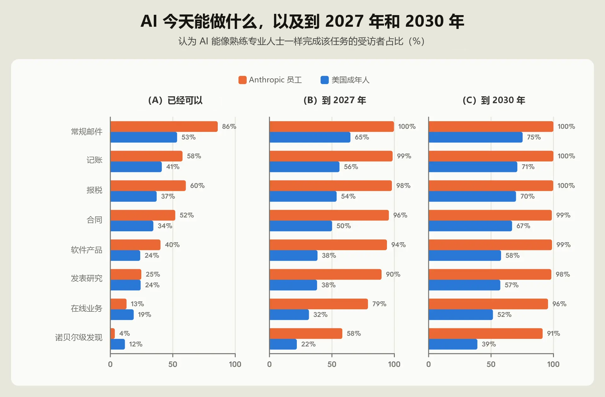
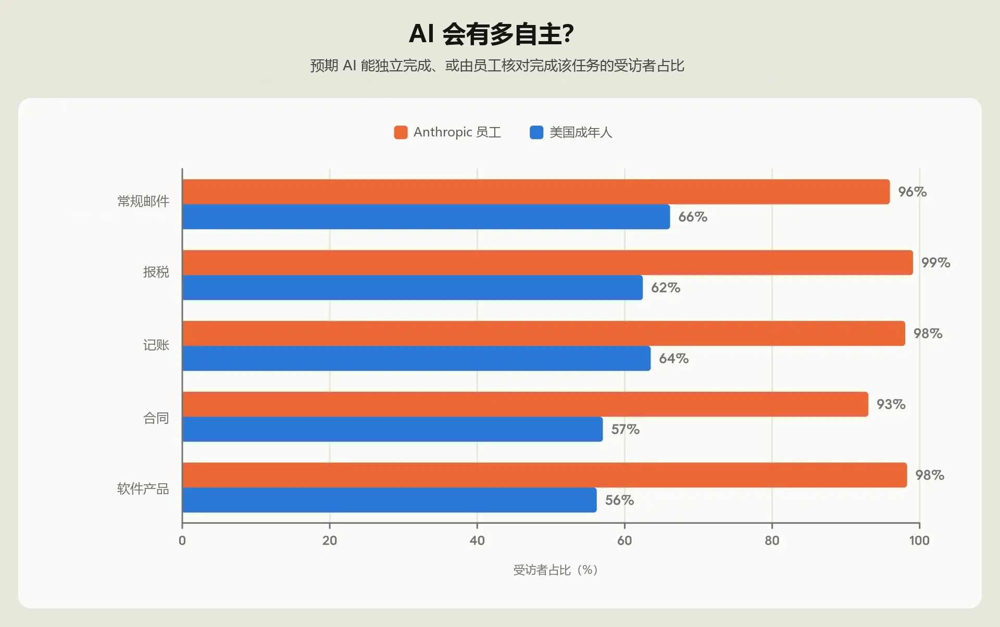
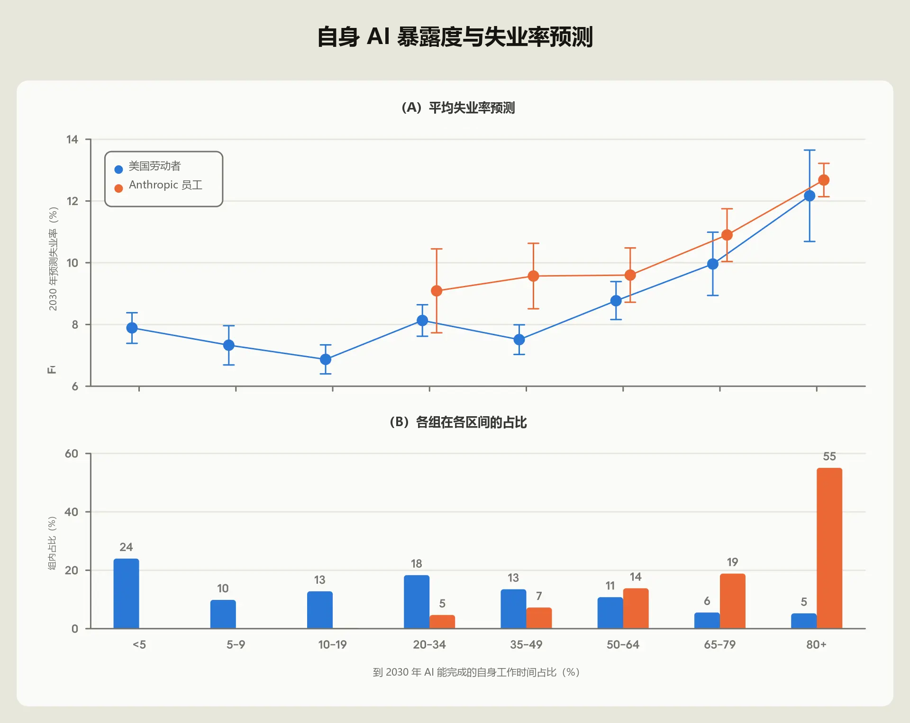
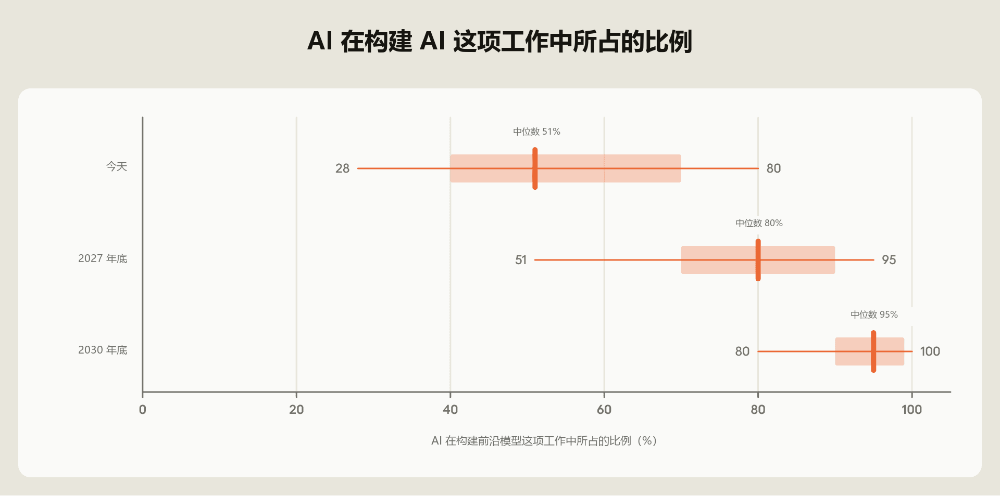
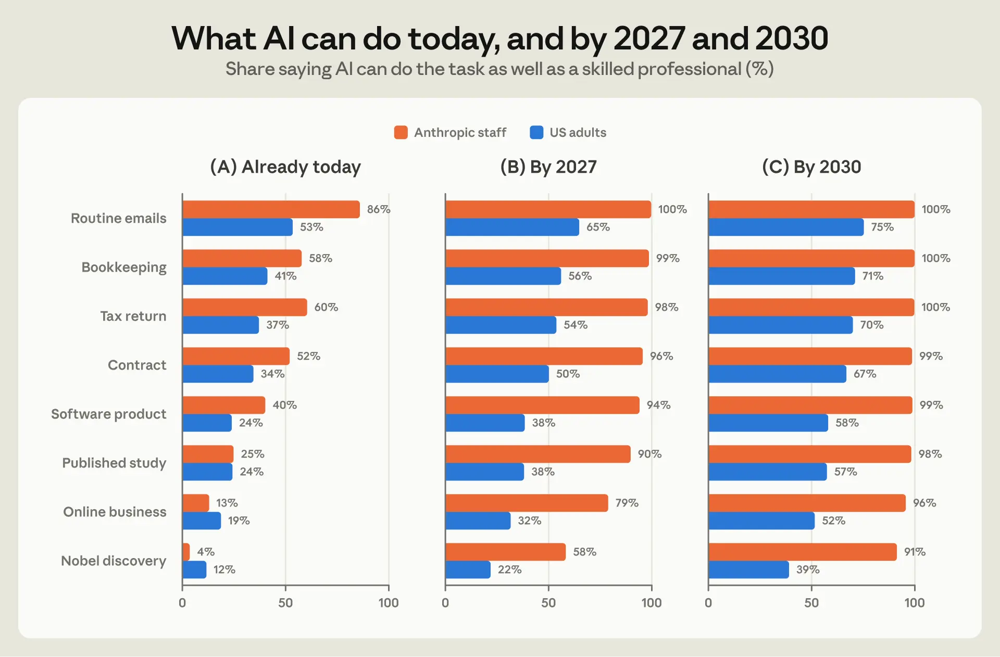
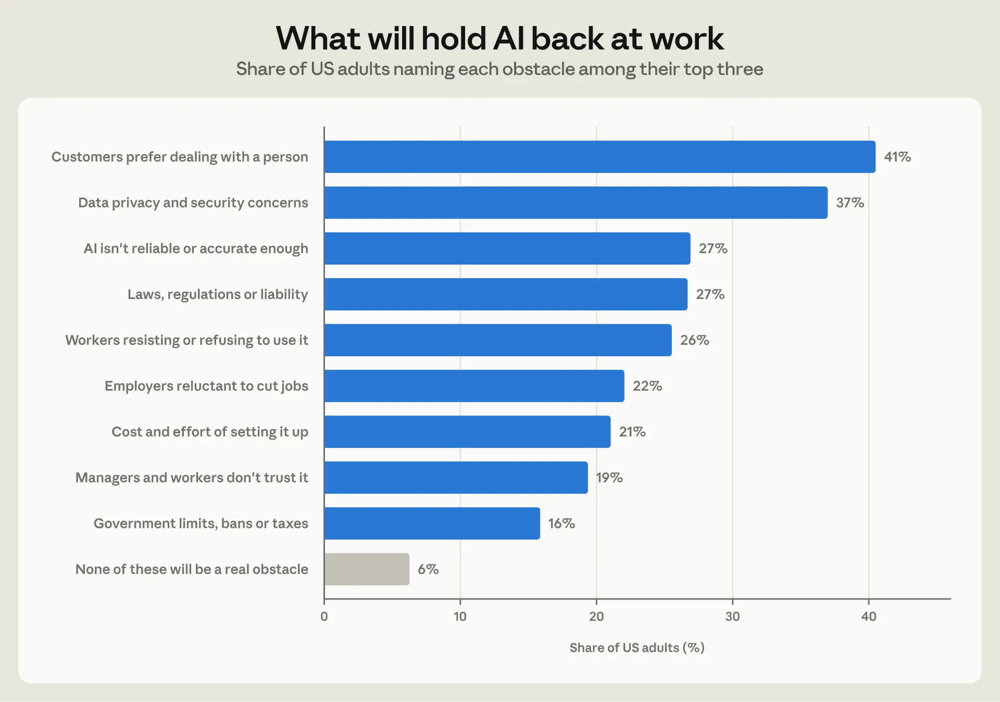
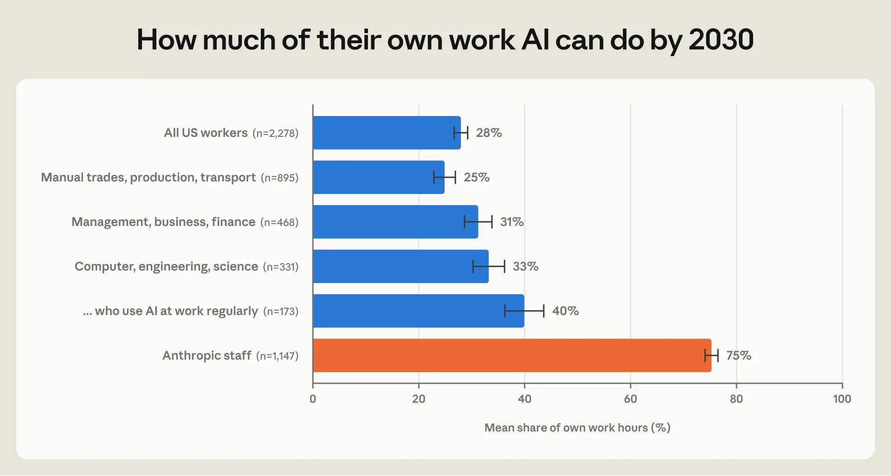
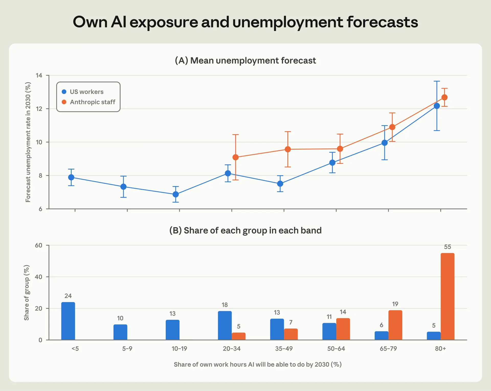

AI 期望落差
📖 中文摘要
专业术语注解
AI期望落差：公众与前沿实验室从业者对AI能力及其经济影响预期的系统性差异变革性AI的经济情景：把能力、扩散、自动化、生产率与再就业摩擦五维预期映射为GDP等宏观结果的模型框架扩散（diffusion）：AI能力在真实工作场景中被实际采用的速度与广度任务级自动化：AI独立完成某项工作任务，而非仅辅助人类完成递归自我改进（RSI）：AI系统参与构建自己的后继模型，从而加速能力进步📄 中文全文
- 类别： 经济研究（Economic Research）
- 来源： https://www.anthropic.com/research/ai-expectations-gap
经济研究（Economic Research） 2026 年 10 月 16 日 阅读 PDF 版 已发布 2026 年 10 月 16 日 团队 经济研究 主题
相关内容 * 经济研究 2026 年 10 月 16 日 Anthropic 的就业正在如何变化
查看更多 Szymon Sacher, Tess Cotter, Charles I. Jones, Anton Korinek, Peter McCrory
主要发现
- 美国成年人预期 AI 能力在未来几年将快速进步；Anthropic 员工预期的进展甚至更快；39% 的美国成年人与 91% 的员工预期 AI 能在 2030 年前做出诺贝尔级别的发现。
- Anthropic 员工预期 AI 在其擅长的任务上带来的生产率增益要大得多。在工作中使用 AI 的美国成年人中，26% 表示有了 AI 后一项任务只需四分之一甚至更少的时间，而 Anthropic 员工中这一比例为 59%。
- 谈到自己的工作，超过一半的 Anthropic 员工预期到 2030 年 AI 能完成其当前工作的至少 80%，而美国劳动者中这一比例仅为 5%。
- 无论在美国劳动者还是 Anthropic 员工中，预期 AI 会承担更多自身工作的人，也预期失业率会更高。尽管两组人对未来能力的看法存在差异，但"AI 可能如何改变自己的工作"与"更广泛的失业"之间被感知到的联系，在两组中非常相似。
引言
AI 将如何在未来几年重塑经济？AI 能力正快速进步，而未来的 AI 模型或许能够构建自己的后继者（递归自我改进），这可能进一步加快进步速度。这种情形会以多快、在多大程度上成为现实，尚不清楚。各种预测分歧极大，争论也异常激烈。 关于 AI 未来对经济影响的分歧，核心来源是什么？主要是由于人们对 AI 能力多快会提升的信念不同？还是反映了人们对这些能力以多快速度、以何种形式转化为现实世界应用的意见不一？关于 AI 未来路径的哪些看法，才与快速的经济增长相一致？ 本文就这些问题给出新的调查证据。2026 年 8 月，我们调查了两组人：一个具全国代表性的美国成年人样本，以及 Anthropic 员工。1 问题涵盖 AI 的能力、将被多广泛地使用、能节省多少时间、会有多自主，以及被取代的劳动者转去另一职业找工作的难度等。2 Anthropic 员工每天都在构建和使用前沿 AI。因此第二组调查展示了离这项技术最近的人如何预判它的未来，既包括能力，也包括更广泛的经济影响。 我们报告以下主要发现。首先，两组人对 AI 今天能做什么大体一致，但对未来进展的速度看法不同。Anthropic 员工预期能力进步更快、AI 会被更广泛地使用且更少需要人类参与，并且在任务上节省的时间会多得多。例如，91% 的员工预期 AI 能在 2030 年前做出诺贝尔级别的发现，而美国成年人为 39%。 其次，在人们自身的工作上存在显著分歧。平均而言，员工预期到 2030 年 AI 能完成其当前工作的 75%，而美国劳动者整体为 28%。 第三，两组人对劳动力市场的推理方式似乎相似：预期 AI 未来会承担更多自身工作的人，预测的失业率更高。而且，在对自身工作被 AI 自动化的预期水平相同的情况下，两组预测的失业率大致相同。
人们预期 AI 会做什么
能力
我们先考察对 AI 能力的预期。我们询问 AI 何时能像熟练专业人士一样完成八项任务，从写常规邮件到做出诺贝尔级别的科学发现。美国成年人与 Anthropic 员工对 AI 今天能做什么大体一致，尤其在较复杂的任务上。两组对任务难度的排序几乎相同（图 1，面板 A）。 两组的分歧在于未来 AI 进展的路径。例如，约四分之一的美国成年人与 Anthropic 员工认为 AI 今天就能设计、开展并发表科学研究。但到明年，10 个员工中有 9 个预期这对 AI 将可行，而普通公众中仅为 38%。到 2030 年，39% 的美国成年人预期 AI 能做出诺贝尔级别的发现（面板 C），员工中则为 91%。或许最引人注目的差异是：视具体任务而定，19% 到 40% 的美国成年人表示 AI 永远 无法完成某项给定任务，而员工中最多只有 2%。 在某种程度上，观点差异反映了 AI 使用频率的差异。在那些经常在工作中使用 AI 的人（约占受访者五分之一）中，56% 预期到 2030 年 AI 至少能完成八项所列任务中的七项。这显著高于全体美国成年人（41%）和从未用过 AI 工具的人（28%），但仍远低于员工的看法（96%）。

预期 AI 能像熟练专业人士一样完成所列任务的受访者占比。 受访者被问及 AI 何时能完成这些任务，而不论企业是否真的会用它。各面板显示回答（A）"已经可以"、（B）"到 2027 年"和（C）"到 2030 年"的比例。美国成年人的回答（N=10,980）经过加权以具全国代表性，Anthropic 员工的回答未加权。采用及其障碍
AI 对经济的影响并非仅由原始能力决定。个人与企业需要真正去用 AI，而这需要时间和试验。在 AI 将能完成的工作任务中，美国成年人预期到 2030 年有 42% 会借助 AI 完成。Anthropic 员工预期未来几年的扩散明显更快，AI 将被用于所有它本可胜任的任务中的 65%。
为理解什么可能阻碍 AI 在工作中的采用，我们请美国成年人从九项障碍中选出至多三项他们认为最大的障碍。普通公众预期，比起技术限制，更可能拖慢采用的是人们的偏好与规则（图 2）。"客户更愿意与真人打交道"是被选中最多的障碍，其次是"数据隐私与安全顾虑"、"AI 不够可靠"以及"法律、法规或责任"。
 美国成年人列出的 2030 年工作中 AI 使用的障碍。 受访者被告知，即便 AI 在技术上能完成某项任务，企业也不总会使用 AI，并被问及九项障碍中哪些会成为 2030 年 AI 用于工作时最大的障碍。每人最多可选三项，因此各比例之和超过 100%。我们没有向 Anthropic 员工提这个问题。
美国成年人列出的 2030 年工作中 AI 使用的障碍。 受访者被告知，即便 AI 在技术上能完成某项任务，企业也不总会使用 AI，并被问及九项障碍中哪些会成为 2030 年 AI 用于工作时最大的障碍。每人最多可选三项，因此各比例之和超过 100%。我们没有向 Anthropic 员工提这个问题。
值得注意的是，经常在工作中使用 AI 的美国成年人把数据隐私与安全顾虑排在首位（42% 将其列入前三大障碍，其余人为 37%），并认为客户偏好与真人打交道略不那么重要（37% 对 42%）。
AI 将有多自主
AI 对劳动力市场的影响，部分取决于 AI 是自主完成复杂任务，还是与人类协作完成。前者倾向于取代人类劳动者；反之，当 AI 补足人类能力时，劳动者会变得更高产。为摸清 Anthropic 员工与普通公众对 2030 年自动化与增强的预期，我们询问到 2030 年 AI 与人类将在从起草邮件到法律合同等各类任务上如何分工。在 Anthropic，绝大多数员工表示到 2030 年 AI 要么独自完成任务，要么在有员工评估其工作的情况下完成任务（图 3）。相比之下，10 个美国成年人中有 4 个反而预期人类将独自完成大部分工作，或在 AI 略加协助下完成。

预期 AI 会独自完成每项任务、或有员工检查即可完成的受访者占比。 受访者被要求设想 AI 对五项任务中的每一项都有用，并回答将由谁来完成：AI 独自；AI 完成大部分、由员工检查；员工完成大部分、AI 协助；或员工独自。柱形显示选择前两者之一的比例。时间节省
AI 能在多大程度上提高产出，不仅取决于它能做哪些任务、被多广泛地使用，还取决于它做得有多快、多好。一项只刚好足以取代劳动者的技术——Acemoglu 与 Restrepo（2019）称之为"凑合"技术（"so-so" technology）——会在 GDP 没有太多增长的情况下取代工作。相反，一项以极小的成本或极短的时间完成任务的技术，则能切实抬高 GDP。
为衡量人们对 AI 带来的生产率提升的感知，我们询问普通公众与 Anthropic 员工：对一项 AI 很擅长的任务，用 AI 完成相比不用 AI 要花多长时间。任务用时减半，对应每小时产出翻倍。3
Anthropic 员工报告的预期节省要大得多，85% 表示只需一半甚至更少的时间。在工作中使用 AI 的美国成年人中，典型回答是减半，29% 表示任务用时一样长甚至更长，而员工中只有 5% 这么说。在美国成年人中，26% 在工作中使用 AI 的人表示一项任务只需四分之一甚至更少的时间，不在工作中使用 AI 的人中为 21%。员工中这一比例为 59%（图 4）。
员工或许是在描述自己在工作中的体验。正如Anthropic 的就业正在如何变化中进一步讨论的，Anthropic 员工在采用智能体式工具后，某些维度上的生产率有所提升：采用编码智能体后的一个月里，工程师新增的代码行数增至三倍；采用 AI 智能体后，销售代表与客户达成的交易更多。法务、招聘等其他业务职能的人均产出也有所上升。
 表示有了 AI 后任务只需四分之一甚至更少时间的受访者占比。 受访者被要求想一项当今 AI 很擅长的任务，例如总结文档或起草邮件，并计算使用 AI 完成它所需的时间（含检查与修正其工作的时间），与不用 AI 相比如何。柱形显示回答"约四分之一的时间"或"约十分之一甚至更少时间"的比例。图 A2 展示全部回答。
表示有了 AI 后任务只需四分之一甚至更少时间的受访者占比。 受访者被要求想一项当今 AI 很擅长的任务，例如总结文档或起草邮件，并计算使用 AI 完成它所需的时间（含检查与修正其工作的时间），与不用 AI 相比如何。柱形显示回答"约四分之一的时间"或"约十分之一甚至更少时间"的比例。图 A2 展示全部回答。
自身的工作与岗位
AI 将能完成多少自身工作
或许并不意外，我们发现普通公众与 Anthropic 员工在 AI 对自身工作的影响上存在很大的认知落差（图 5）。平均而言，Anthropic 员工表示到 2030 年 AI 能完成其当前工作时间的 75%。美国劳动者（报告自己有工作的受访者）给出的平均比例为 28%，且只有 20 人中有 1 人表示到 2030 年 AI 能完成其工作时间的 80% 或更多。
在美国劳动者中，预期因职业而异：体力工种、生产与运输劳动者预期 AI 能完成 25% 的工作时间，计算机、工程与科学职业的劳动者为 33%。对后一组，经常使用 AI 的人预期仅为 40%，这一看法更接近普通美国劳动者的平均值，而非 Anthropic 员工的平均值（75%）。
 受访者预期到 2030 年 AI 能完成的自身工作时间占比。 即受访者当前工作时间中 AI 到 2030 年将能完成的比例。美国成年人样本仅限有工作的受访者。员工通过滑块作答，美国成年人则选择区间，我们取区间中点。柱形显示 95% 置信区间。
受访者预期到 2030 年 AI 能完成的自身工作时间占比。 即受访者当前工作时间中 AI 到 2030 年将能完成的比例。美国成年人样本仅限有工作的受访者。员工通过滑块作答，美国成年人则选择区间，我们取区间中点。柱形显示 95% 置信区间。
自身工作受暴露程度与失业预测
人们对 AI 能完成多少自身工作的预期，在很大程度上解释了他们对劳动力市场的预期。我们告知受访者当前失业率约为 4.2%，请他们预测 2030 年的失业率。图 6 按受访者预期到 2030 年 AI 能完成的自身工作时间占比分组，展示各组的平均失业率预测。 预期 AI 能完成不足一半自身工作的美国劳动者，预测失业率为 7% 到 8%。超过一半后，预测值随受 AI 影响工作的占比上升。那些预期 AI 能完成 80% 或更多自身工作的人，平均预测 2030 年失业率为 12.2%，高于全球金融危机期间的峰值。在美国劳动者中，受影响工作每多 10 个百分点，对应预测失业率多 0.4 个百分点。对 AI 的普遍乐观并不能解释这一点。在固定自身工作受暴露程度后，劳动者预期 AI 能掌握八项任务中的多少，与预测无关。 尽管员工自报的暴露程度高得多，同样的梯度也出现在 Anthropic 员工中，其预测与普通公众高度吻合。因此，这两组人似乎并不持有关于"AI 将如何同时影响自身工作与更广泛劳动力市场"的不同理论。他们对 AI 能力是什么有着不同的体验，进而有着不同的预期。

按受访者预期 AI 能完成的自身工作时间占比分组的 2030 年失业率平均预测。 受访者被告知美国当前失业率为 4.2%，并被问及预期 2030 年为多少。面板（A）按有工作的受访者预期到 2030 年 AI 能完成的当前工作时间占比分组，展示各组的平均预测与 95% 置信区间。少于 20 名受访者的组已略去。面板（B）显示美国劳动者与 Anthropic 员工在各组中的占比。招聘与再就业
尽管 Anthropic 员工预期 AI 能完成其大部分工作，他们仍预期 Anthropic 会继续招聘。95% 的 Anthropic 员工预期未来 12 个月员工人数会增长，员工的中位预期是增长 66%，27% 预期至少翻一番。这些是内部投票中员工的个人预期，并不代表 Anthropic 的计划或其对人数的看法。即便如此，它们表明至少在一家前沿 AI 实验室里，自动化任务与裁撤岗位是两种不同的预测。 不过，对被 AI 取代的劳动者多快能找到新工作，Anthropic 员工比美国成年人略为悲观。我们询问：一个在 2030 年因 AI 自动化而失业、且需要转换职业的人，需要多久才能找到新工作。4 Anthropic 员工的中位预期是，被 AI 取代的劳动者要花 12 个月才能在新职业中找到岗位。相比之下，美国成年人的中位回答落在 7–12 个月区间。
对 AI 的预期及其经济含义
将调查回答映射到模型隐含的经济情景
在变革性 AI 的经济情景中，我们提出了一个结构化框架，用于评估 AI 能力与扩散的不同未来路径如何转化为经济结果的差异。该模型让我们能把每位受访者在五个维度——能力、扩散、自动化、生产率与劳动者转换摩擦——上的回答，转化为模型隐含的经济结果。5 在美国成年人与 Anthropic 员工两个样本中，我们找出回答了所有与关键模型输入相关问题的受访者（3,259 名美国成年人与 1,093 名员工）。随后我们评估这些回答对每位受访者所隐含的经济情景，下文聚焦 2030 年 GDP 增长的含义。 按模型推算，美国成年人中位回答隐含 2030 年 GDP 增长 5.4%。员工中位回答隐含 GDP 增长到 2030 年加速至 17.1%。每组内部差异显著，因此分布大幅重叠（图 7）。附录图 A1 展示了每种信念对这一落差的贡献。
来自在线情景探索器测验的回答
图 7 还展示了由网站访客提供的输入所隐含的经济情景，这些输入来自一个基于该经济模型的交互式情景探索器，于 2026 年 9 月 9 日发布在 www.anthropic.com/institute/econ-scenarios。
该交互式探索器使用了我们在 2026 年 8 月向美国成年人与 Anthropic 员工所提问题的简版。发布后头 48 小时内，有 23,075 名访客完成了调查，来自全球 140 多个国家。这些访客主动来到 Anthropic 网站的一个页面并参与测验，因此很可能比普通公众更关注 AI。事实上，他们的回答介于美国成年人与 Anthropic 员工之间：访客中位回答隐含 12.5% 的增长。
 基于美国成年人、网站访客与 Anthropic 员工预期推算的 2030 年模型隐含 GDP 增长。 每位受访者对能力、采用、自主性、时间节省与再就业五个问题的回答，都经由《变革性 AI 的经济情景》中的模型运算；详见其中附录 B。粗条跨第 25 至 75 百分位，细线跨第 10 至 90 百分位。虚线标出论文列出的三种情景：温和（Modest，年 GDP 增长 2.4%）、显著（Substantial，GDP 增长 5.4%）与极端（Extreme，GDP 增长 15.4%）。图中包含回答了全部五个问题的受访者：3,259 名美国成年人（仅 2030 年那一半）、1,093 名 Anthropic 员工，以及在 2026 年 9 月 9 日上线后 48 小时内于 anthropic.com/institute/econ-scenarios 完成测验的 23,075 名网站访客。
基于美国成年人、网站访客与 Anthropic 员工预期推算的 2030 年模型隐含 GDP 增长。 每位受访者对能力、采用、自主性、时间节省与再就业五个问题的回答，都经由《变革性 AI 的经济情景》中的模型运算；详见其中附录 B。粗条跨第 25 至 75 百分位，细线跨第 10 至 90 百分位。虚线标出论文列出的三种情景：温和（Modest，年 GDP 增长 2.4%）、显著（Substantial，GDP 增长 5.4%）与极端（Extreme，GDP 增长 15.4%）。图中包含回答了全部五个问题的受访者：3,259 名美国成年人（仅 2030 年那一半）、1,093 名 Anthropic 员工，以及在 2026 年 9 月 9 日上线后 48 小时内于 anthropic.com/institute/econ-scenarios 完成测验的 23,075 名网站访客。
实验室内部
员工对 AI 能力更乐观的一个原因，可能是他们对开发过程有更高的可见度。Anthropic Institute 近期发布了一份关于递归自我改进（RSI）进展的报告，RSI 指 AI 系统不断提升自身能力的过程（Favaro 与 Clark，2026）。 为弄清员工自己是否预期这会发生，我们询问 Anthropic 员工：构建 2026 年初一个前沿模型的工作中，今天有多大比例由 AI 完成，以及他们预期未来这一比例是多少（图 8）。6 在接受调查的 Anthropic 员工中，今天的中位回答是 51%，到 2027 年底为 80%，到 2030 年底为 95%。 对"AI 在 AI 开发中承担多少工作"的估计，团队内部的差异远大于团队之间的差异。不过，离构建模型工作最近的研究团队员工，给出的 AI 今日占比略高：平均 60%，而所有其他受访者为 53%。这与信息起到一定作用相一致，尽管研究人员——因其工作性质——也可能比其他员工在自身工作中更多地使用 AI。 与招聘预测一样，这些回答是 2026 年 8 月面向 Anthropic 员工的一次内部投票中员工的个人看法。

Anthropic 员工对构建前沿模型的工作中由 AI 完成所占比例的估计。 员工被问及构建 2026 年初一个前沿模型的工作中，今天有多大比例由 AI 完成，以及预期 2027 年底与 2030 年底该比例是多少。刻度线标示中位回答，箱体跨第 25 至 75 百分位，须线跨第 10 至 90 百分位。回答是内部投票中员工的个人估计，并非 Anthropic 的测量或公司预测。结论
美国成年人与 Anthropic 员工对 AI 今天能做什么大体一致。但他们在 AI 会多快改进、会被多广泛地使用，以及以节省时间衡量的生产率增益有多大上存在分歧。透过变革性 AI 的经济情景中的模型来看，美国成年人中位回答隐含的情景是：美国经济以超过其通常增速两倍的速度增长。而在处于 AI 开发与使用前沿的 Anthropic 员工中，对 AI 进展、采用以及知识工作自动化的预期，隐含着一场变革性的、史上前所未有的经济变化：到 2030 年，GDP 规模大约每四年半翻一番。 那些预期未来几年 AI 会承担更多自身工作的人，也预期失业率更高。这在美国普通公众与 Anthropic 员工中都成立；平均而言，Anthropic 员工预期自身工作被自动化得更快，因而失业率也更高。我们发现，这种预期上的分歧，与 Anthropic 员工和普通公众对未来几年自身工作会有多少被自动化的不同看法紧密相关。 两组人与 AI 打交道的日常体验差异很大。大多数 Anthropic 员工已经与能完成其大部分工作的 AI 并肩工作，而很少有美国劳动者如此。那些已经有此体验的人，其预期更接近 Anthropic 员工，这表明随着 AI 使用普及，公众预期可能会转变。转变幅度将取决于 AI 在其他地方能否像在前沿实验室那样承担同样多的工作。
建议引用格式
@techreport{sacher2026expectations,
author = {Sacher, Szymon and Cotter, Tess and Jones, Charles I. and Korinek, Anton and McCrory, Peter},
title = {The {AI} Expectations Gap: Public and Frontier Lab Views on {AI}'s Impact on Work},
institution = {The Anthropic Institute},
type = {Technical Report},
year = {2026},
month = oct,
url = {https://www.anthropic.com/research/ai-expectations-gap}
}
参考文献
Acemoglu, D. and P. Restrepo (2019). "Automation and New Tasks: How Technology Displaces and Reinstates Labor." Journal of Economic Perspectives 33(2), 3–30. Favaro, M. and J. Clark (2026). “When AI Builds Itself.” The Anthropic Institute. https://www.anthropic.com/institute/recursive-self-improvement. Korinek, A., C. I. Jones, S. Sacher, T. Cotter and P. McCrory (2026). "Economic Scenarios for Transformative AI." The Anthropic Institute Working Paper No. 2026-02. Massenkoff, M., E. Lyubich, S. Sacher, Z. Hitzig, S. Zhang, R. Heller and P. McCrory (2026). “Anthropic Economic Index report: Cadences.” The Anthropic Institute. https://www.anthropic.com/research/economic-index-june-2026-report. Wilmers, N., R. Catipon, M. Massenkoff and P. McCrory (2026). “How Employment is Changing at Anthropic.” The Anthropic Institute. https://www.anthropic.com/research/employment-at-anthropic.
附录
可在此获取。
脚注
01Morning Consult 于 8 月 11 日至 23 日期间开展了面向美国成年人的调查，触达 10,980 名美国成年人。其回答经过加权以具成年人口代表性。关于未来的问题，对一半受访者问的是 2027 年，对另一半问的是 2030 年。除非另有说明，我们报告的是 2030 年的回答。调查以在线方式对自愿加入的样本组成员实施，因此排除了无互联网接入的成年人，并可能在某些人口统计加权无法校正的方面与总体存在差异。员工调查是一次内部投票，于 8 月 9 日至 12 日进行，从公司各部门抽取了 1,334 名受访者。它未加权，且所有人都被问及 2030 年。 02Morning Consult 于 9 月 17 日至 24 日再次提出相同问题，末尾新增两题，触达 7,613 名美国成年人。主要结果变化不大：该样本中美国成年人中位回答隐含 2030 年 GDP 增长 5.6%。最大的变化是预期 2030 年前出现诺贝尔级别发现的美国成年人占比升至 44%，高于此前的 39%。全文我们均报告 8 月的结果。 03这类似于我们在 Anthropic Economic Index 中用来评估人们与企业交给 Claude 的任务所节省时间的分类器。参见从 Claude 对话估算 AI 生产率增益。 04两组人被问了如下问题：正常情况下，一个失业者通常约需 3 个月找到新工作。现在设想一个人在 2030 年因 AI 自动化而失业，且需要转换到不同职业。你认为他要多久才能找到新工作？对普通公众，选项从"不到 1 个月"到"超过 3 年，或永远找不到新工作"不等。Anthropic 员工则通过滑块以月为单位作答。 05我们遵循变革性 AI 的经济情景中概述的流程，把原始调查回答映射为模型关键输入所隐含的路径。参见其中附录 B。在此练习中，我们把模型中所有其他参数固定为"显著"（Substantial）情景下的取值。 06这是一个比"AI 写了多少代码"更宽泛的问题。Favaro 与 Clark（2026）报告，目前合入 Anthropic 代码库的代码中有超过 80% 由 Claude 编写，但构建前沿模型还涉及研究方向、实验设计与评估等更多环节。
作者与致谢
致谢
Scott Booth, Meredith Callan, Yena Cho, Adam Farina, Ben Fowler, Ryan Heller, Aisling Keenan, Eva Lyubich, Maxim Massenkoff, Matt Mohn (Morning Consult), Matt Monday (Morning Consult), Kerry Persen, Sarah Pollack, Santi Ruiz, Monika Tuchowska, Heather Whitney, Nathan Wilmers, Kim Withee, Charles Yang, Jack Clark, Dario Amodei
▸ 英文原文（点击展开）
The AI expectations gap
- Date: 2026-10-16
- Category: Copy
- Source: https://www.anthropic.com/research/ai-expectations-gap
The AI expectations gap
Read in PDF Published Oct 16, 2026 Team Economics Topics
Related articles * Economics Oct 16, 2026 How employment is changing at Anthropic
View more Szymon Sacher, Tess Cotter, Charles I. Jones, Anton Korinek, Peter McCrory
Key findings
- US adults expect AI capabilities to advance rapidly in the coming years; Anthropic staff expect even faster progress; 39% of US adults and 91% of staff expect that AI will be able to make a Nobel-level discovery by 2030.
- Anthropic staff expect much larger productivity gains from AI on the tasks it is well-suited for. Among US adults who use AI at work, 26% say a task takes a quarter of the time or less with AI, compared to 59% of Anthropic staff.
- When it comes to their own job, over half of Anthropic staff expect AI to be able to do at least 80% of their current work by 2030, compared with 5% of US workers.
- Among both US workers and Anthropic staff, people who expect AI to do more of their own work anticipate higher unemployment. While there are differences in beliefs about future capabilities, the perceived link between how AI might change one’s own job and broader unemployment is very similar for both groups.
Introduction
How will AI reshape the economy in the years ahead? AI capabilities are advancing rapidly, and the possibility that future AI models may be able to build their own successors (recursive self-improvement) could further accelerate the rate of progress. How quickly this might materialize and to what extent is unclear. Forecasts vary widely and are fiercely debated. What is the core source of disagreement about AI's future impact on the economy? Is it principally due to differences in beliefs about how quickly AI capabilities will improve? Or does it reflect disagreement about how quickly and in what form those capabilities translate to real-world adoption? Which views on the future path of AI are consistent with rapid economic growth? This note presents new survey evidence on these questions. In August 2026, we surveyed two groups: a sample of US adults that was nationally representative and Anthropic staff.1 The questions covered, among other things, AI’s capabilities, how widely it will be used, how much time it saves, how autonomous it will be, and how difficult it will be for a displaced worker to find a job in a different occupation.2 Anthropic staff build and use frontier AI every day. The second survey therefore shows how people closest to the technology anticipate its future, both in capabilities and in broader economic impact. We report the following main findings. First, the two groups largely agree about what AI can do today but disagree about the pace of future progress. Anthropic staff expect capabilities to advance faster, AI to be used more widely and with less human involvement, and the time it saves on a task to be much larger. For example, 91% of staff expect AI to be able to make a Nobel-level discovery by 2030, compared to 39% of US adults. Second, there are sharp differences concerning people's own jobs. On average, staff members expect AI to be able to do 75% of their current work by 2030, compared to 28% for US workers overall. Third, the two groups seem to reason about the labor market in a similar way: people who expect AI to do more of their own work in the future forecast higher unemployment. And, at the same level of expected AI automation of their own work, both groups forecast about the same unemployment rate.
What people expect AI to do
Capabilities
We first investigate expectations about AI capabilities. We asked when AI will be able to do each of eight tasks as well as a skilled professional, from writing routine emails to making a Nobel-level scientific discovery. US adults and Anthropic staff largely agree on what AI can do today, particularly when it comes to more complex tasks. Both groups rank tasks in nearly the same order of difficulty (Figure 1, panel A). The groups disagree on the path of future AI progress. For example, around a quarter of US adults and Anthropic staff think that AI can design, conduct, and publish scientific studies today. But by next year, 9 in 10 staff expect this to be feasible for AI as compared to just 38% for the general public. By 2030, 39% of US adults expect AI to be able to make a Nobel-level discovery (panel C), compared with 91% of staff. What is perhaps the most striking difference, depending on the task, between 19 and 40% of US adults say AI will never be able to do a given task, compared with at most 2% of staff. In part, differences in views reflect differences in frequency of AI use. Among those who use AI at work regularly (about a fifth of respondents), 56% expect AI to be able to do at least seven of the eight named tasks by 2030. This is substantially higher than among all US adults (41%) and among those who have never used an AI tool (28%), but still well short of the staff view (96%).

Share of respondents who expect AI to be able to complete the listed tasks as well as a skilled professional. Respondents were asked when AI will be able to complete these tasks, regardless of whether companies will actually use it. Panels show the share answering (A) already, (B) by 2027, and (C) by 2030. US adults’ responses (N=10,980) are weighted to be nationally representative, Anthropic staff responses are unweighted.Adoption and its obstacles
The impact of AI on the economy is not solely determined by raw capabilities. People and businesses need to actually use AI, which takes time and experimentation. Of the work tasks AI will be able to do, US adults expect that 42% will be done with AI by 2030. Anthropic staff expect noticeably faster diffusion over the next few years, with AI used for 65% of all tasks for which it could be used. To understand what might hold back AI adoption at work, we asked US adults to choose up to three obstacles from a list of nine that they expect to be the biggest. The general public expects that people's preferences and rules, more than the technological constraints, may be what holds adoption back (Figure 2). “Customers preferring to deal with a person” was the obstacle selected most often, followed by “data privacy and security concerns,” “AI not being reliable enough,” and “laws, regulations or liability.”

Obstacles to AI use at work in 2030 named by US adults. Respondents were told that businesses do not always use AI even when it is technically capable of doing a task, and were asked which of nine obstacles will be the biggest to AI being used at work in 2030. Each could choose up to three, so shares sum to more than 100%. We did not ask this question to Anthropic staff.Notably, US adults who use AI regularly at work rank data privacy and security concerns first (42% consider it among the top three obstacles, compared with 37% among the rest) and see customer preferences to deal with humans as slightly less important (37% vs. 42%).
How autonomous AI will be
The impact of AI on the labor market will in part depend on whether AI completes complex tasks autonomously or in collaboration with a human. The former tends to displace human workers. Alternatively, when AI complements human capabilities, workers become more productive. To get a sense for anticipated automation versus augmentation in 2030 among Anthropic staff and the general public, we asked how AI and humans will work together on various tasks ranging from email drafting to legal contracting by 2030. At Anthropic, the vast majority of staff say that by 2030 AI will either complete tasks alone or with a worker evaluating the work (Figure 3). By contrast, 4 in 10 US adults instead expect that humans will do most of the work themselves or with some AI help.
 Share of respondents who expect AI to do each task alone or with a worker checking. Respondents were asked to imagine that AI is useful for each of the five tasks and asked who will be doing them: AI alone; AI does most of it, with workers checking; workers do most of it, with AI helping; or workers alone. Bars show the share choosing either of the first two.
Share of respondents who expect AI to do each task alone or with a worker checking. Respondents were asked to imagine that AI is useful for each of the five tasks and asked who will be doing them: AI alone; AI does most of it, with workers checking; workers do most of it, with AI helping; or workers alone. Bars show the share choosing either of the first two.
Time savings
How much AI raises output depends not only on which tasks it can do and how widely it is used, but also on how much faster and better it does them. A technology that is just good enough to replace workers—what Acemoglu and Restrepo (2019) call a "so-so" technology—displaces work without much increase in GDP. By contrast, a technology that completes tasks at a small fraction of cost or in a fraction of time can meaningfully raise GDP.
To measure perceptions about the productivity lift from AI, we asked the general public and Anthropic staff how long a task for which AI is well suited takes with AI, compared with doing it without AI. A task done in half the time corresponds to a doubling of output per hour.3
Anthropic staff report much larger expected savings, with 85% saying that it takes half the time or less. Among US adults who use AI at work, the typical answer is half the time, and 29% say the task takes just as long or longer, while only 5% of staff say so. Among US adults, 26% of those who use AI at work say a task takes a quarter of the time or less, and 21% of those who do not use AI at work say the same. For staff, that share is 59% (Figure 4).
Staff may be describing what they experience at work. As discussed further in How Employment is Changing at Anthropic, Anthropic employees increased productivity on some dimensions after adopting agentic tools: the lines of code engineers added tripled in the month after adopting coding agents and sales representatives closed more deals with clients after adopting AI agents. Output per person also rose in other business functions, like legal and recruiting.
 Share of respondents who say a task takes a quarter of the time or less with AI. Respondents were asked to think of a task that today's AI is well suited for, such as summarizing a document or drafting an email, and how long it takes to finish using AI, counting the time spent checking and fixing its work, compared with not using AI. Bars show the share answering "about a quarter of the time" or "about a tenth of the time or less." Figure A2 shows all answers.
Share of respondents who say a task takes a quarter of the time or less with AI. Respondents were asked to think of a task that today's AI is well suited for, such as summarizing a document or drafting an email, and how long it takes to finish using AI, counting the time spent checking and fixing its work, compared with not using AI. Bars show the share answering "about a quarter of the time" or "about a tenth of the time or less." Figure A2 shows all answers.
Own work and jobs
How much of their own work AI will be able to do
Perhaps unsurprisingly, we find a large gap in perceptions between the general public and Anthropic staff when it comes to AI’s impact on their own jobs (Figure 5). On average, Anthropic staff members say AI will be able to do 75% of their current work hours by 2030. US workers (respondents who report having a job) put the share at 28% on average, and only 1 in 20 say that AI could do 80% or more of their work hours by 2030. Across US workers, expectations vary by occupation: AI is expected to be able to do 25% of work hours among manual trades, production and transport workers and 33% for workers in computer, engineering, and science occupations. For this latter group, those who use AI regularly expect only 40%, a belief that is closer to the average US worker than to the average Anthropic staff member (75%).

Share of their own work hours that respondents expect AI to be able to do by 2030. Share of the respondent's current work hours that AI will be able to do by 2030. The US adults sample is restricted to employed respondents only. Staff answered on a slider while US adults choose a range and we use range midpoints. Bars show 95% confidence intervals.Own-job exposure and unemployment forecasts
How much of their own work people expect AI to do goes a long way toward explaining what they expect for the labor market. We told respondents that the current unemployment rate was about 4.2% and asked them to forecast the rate in 2030. Figure 6 groups respondents by the share of their own hours they expect AI to be able to do by 2030, and shows each group's average unemployment rate forecast. US workers who expect AI to be able to do less than half of their work forecast unemployment of 7 to 8%. Above half, the forecast increases with the share of AI-exposed work. Those who expect AI to do 80% or more of their work expect, on average, an unemployment rate of 12.2% in 2030, above its peak during the Great Financial Crisis. Across US workers, ten more percentage points of work affected is associated with 0.4 points more forecasted unemployment. General optimism about AI does not explain this. Holding their own work exposure fixed, the share of the eight tasks a worker expects AI to master is unrelated to the forecast. Even though their own reported exposure is much higher, the same gradient appears among Anthropic staff, with forecasts closely mirroring those of the general population. Therefore, these two groups do not seem to hold different theories of how AI will simultaneously affect their own jobs and the broader labor market. They have different experiences of what AI capabilities are and, in turn, expectations.

Mean forecast of the 2030 unemployment rate, by the share of their own work hours that respondents expect AI to be able to do. Respondents were told that the US unemployment rate is 4.2% today and asked what they expect it to be in 2030. Panel (A) groups employed respondents by the share of their current work hours they expect AI to be able to do by 2030, and shows each group's mean forecast and 95% confidence interval. Groups with fewer than 20 respondents are omitted. Panel (B) shows the share of US workers and of Anthropic staff in each group.Hiring and re-employment
Even though Anthropic staff expect AI to be able to do most of their work, they also expect Anthropic to keep hiring. 95% of Anthropic staff expect headcount to grow over the next 12 months, the median staff member expects it to grow by 66%, and 27% expect it at least to double. These are the personal expectations of staff members in an internal poll and do not represent Anthropic's plans or its view of its headcount. Even so, they show that automating tasks and shedding jobs are different forecasts, at least at a frontier AI lab. Anthropic staff, however, are slightly more pessimistic than US adults about how quickly workers displaced by AI can find new work. We asked how long it would take a person who loses their job to AI automation in 2030—and who needs to switch occupations—to find a new one.4 The median Anthropic staff member expects that a worker displaced by AI would take 12 months to find a role in a new occupation. This compares to the median US adult response in the range of 7-12 months.
Expectations about AI and their economic implications
Mapping survey responses to model-implied economic scenarios
In Economic Scenarios for Transformative AI we introduced a structured framework for assessing how different future paths for AI capabilities and diffusion might translate into differences in economic outcomes. The model allows us to translate each respondent’s answers across five dimensions — capabilities, diffusion, automation, productivity, and worker transition frictions — into model-implied economic outcomes.5 Across both our US adult and Anthropic staff samples, we identify every respondent who answered all questions related to the key model inputs (3,259 US adults and 1,093 staff). We then evaluate the economic scenario implied by those answers for each respondent, focusing below on implications for GDP growth in 2030. The median US adult's answers imply GDP growth of 5.4% in 2030, according to the model. The median staff member's answers imply GDP growth accelerating to 17.1% by 2030. There is significant variation within each group, so the distributions overlap widely (Figure 7). Figure A1 in the appendix shows how much each belief contributes to this gap.
Responses from online scenario explorer quiz
Figure 7 also shows the economic scenarios implied by inputs provided by site visitors to an interactive scenario explorer based on this economic model that was published at www.anthropic.com/institute/econ-scenarios on September 9, 2026.
The interactive explorer asked shorter form versions of the questions we fielded to US adults and Anthropic staff in August 2026. 23,075 visitors completed the survey in the first 48 hours after publication, connecting from more than 140 countries worldwide. These visitors chose to come to a page on Anthropic's website and to take the quiz, so they are likely to be more interested in AI than the general public. Indeed, their answers place them between those of US adults and Anthropic staff: the median visitor's answers imply 12.5% growth.
 Model-implied GDP growth in 2030, based on the expectations of US adults, website visitors and Anthropic staff. Each respondent's answers to the five questions on capabilities, adoption, autonomy, time savings, and re-employment are run through the model from Economic Scenarios for Transformative AI; see Appendix B therein for details. The thick bar spans the 25th to 75th percentile and the thin line the 10th to 90th percentile. Dotted lines mark three scenarios laid out in the paper: Modest (annual GDP growth of 2.4%), Substantial (5.4% GDP growth), and Extreme (15.4% GDP growth). The figure includes respondents who answered all five questions: 3,259 US adults (2030 half only), 1,093 Anthropic staff, and the 23,075 website visitors who completed the quiz available at anthropic.com/institute/econ-scenarios in the 48 hours after its launch on September 9, 2026.
Model-implied GDP growth in 2030, based on the expectations of US adults, website visitors and Anthropic staff. Each respondent's answers to the five questions on capabilities, adoption, autonomy, time savings, and re-employment are run through the model from Economic Scenarios for Transformative AI; see Appendix B therein for details. The thick bar spans the 25th to 75th percentile and the thin line the 10th to 90th percentile. Dotted lines mark three scenarios laid out in the paper: Modest (annual GDP growth of 2.4%), Substantial (5.4% GDP growth), and Extreme (15.4% GDP growth). The figure includes respondents who answered all five questions: 3,259 US adults (2030 half only), 1,093 Anthropic staff, and the 23,075 website visitors who completed the quiz available at anthropic.com/institute/econ-scenarios in the 48 hours after its launch on September 9, 2026.
Inside the lab
One reason staff are more optimistic about AI capabilities may be that they have greater visibility into the development process. The Anthropic Institute recently published a report on progress toward recursive self-improvement (RSI), a process where AI systems increasingly improve their own capabilities (Favaro and Clark, 2026).
To shed light on whether staff themselves expect this to happen, we asked Anthropic staff what share of the work of building an early-2026 frontier model is done by AI today, and what they expect it to be in the future (Figure 8).6 Among surveyed Anthropic staff, the median answer today is 51%, 80% by the end of 2027 and 95% by the end of 2030.
Estimates of the share of work that AI does in AI development vary far more within teams than between them. Still, staff on research teams, who are closest to the work of building models, put AI's share today somewhat higher: 60% on average, against 53% for all other survey respondents. This is consistent with information playing some role, although researchers—by virtue of the nature of their work—may also use AI more in their own work than other employees.
As with the hiring forecasts, these responses are the personal views of staff members in an internal poll fielded to Anthropic staff in August 2026.
 Anthropic staff's estimates of the share of the work of building a frontier model that is done by AI. Anthropic staff were asked what share of the work of building an early-2026 frontier model is done by AI today, and what they expect that share to be at the end of 2027 and 2030. The tick marks the median answer, the boxes span 25th to 75th percentile, and the lines span 10th to 90th percentile. Answers are the personal estimates of staff members in an internal poll and are not a measurement by Anthropic or a company forecast.
Anthropic staff's estimates of the share of the work of building a frontier model that is done by AI. Anthropic staff were asked what share of the work of building an early-2026 frontier model is done by AI today, and what they expect that share to be at the end of 2027 and 2030. The tick marks the median answer, the boxes span 25th to 75th percentile, and the lines span 10th to 90th percentile. Answers are the personal estimates of staff members in an internal poll and are not a measurement by Anthropic or a company forecast.
Conclusion
US adults and Anthropic staff largely agree about what AI can do today. However, they disagree about how quickly it will improve, how widely it will be used, and how large the productivity gains measured by time saved will be. Through the lens of the model in Economic Scenarios for Transformative AI, the median US adult's answers imply a scenario in which the US economy grows at more than twice its typical rate. Among Anthropic staff working at the frontier of AI development and usage, expectations about AI progress, adoption, and automation of knowledge work imply a transformative and historically unprecedented change to the economy: by 2030, GDP is doubling in size roughly every four and a half years. Those who expect AI to do more of their own work in the years ahead expect higher unemployment as well. This is true for the general public in the US and among Anthropic employees; on average, Anthropic staff expect faster automation of their own work and, in turn, higher unemployment. We find that this disagreement in expectations is closely tied to differing views between Anthropic staff and the general public about how much of their own work will be automated in the years ahead. The day-to-day experience with AI varies widely between the two groups. Most Anthropic staff already work alongside AI that does much of their job, whereas few US workers do. Those who do already hold expectations closer to those of Anthropic staff, which suggests that public expectations may shift as AI use spreads. How far they shift will depend on whether AI comes to do as much of the work elsewhere as it does at a frontier lab.
Suggested citation
@techreport{sacher2026expectations,
author = {Sacher, Szymon and Cotter, Tess and Jones, Charles I. and Korinek, Anton and McCrory, Peter},
title = {The {AI} Expectations Gap: Public and Frontier Lab Views on {AI}'s Impact on Work},
institution = {The Anthropic Institute},
type = {Technical Report},
year = {2026},
month = oct,
url = {https://www.anthropic.com/research/ai-expectations-gap}
}
References
Acemoglu, D. and P. Restrepo (2019). "Automation and New Tasks: How Technology Displaces and Reinstates Labor." Journal of Economic Perspectives 33(2), 3–30. Favaro, M. and J. Clark (2026). “When AI Builds Itself.” The Anthropic Institute. https://www.anthropic.com/institute/recursive-self-improvement. Korinek, A., C. I. Jones, S. Sacher, T. Cotter and P. McCrory (2026). "Economic Scenarios for Transformative AI." The Anthropic Institute Working Paper No. 2026-02. Massenkoff, M., E. Lyubich, S. Sacher, Z. Hitzig, S. Zhang, R. Heller and P. McCrory (2026). “Anthropic Economic Index report: Cadences.” The Anthropic Institute. https://www.anthropic.com/research/economic-index-june-2026-report. Wilmers, N., R. Catipon, M. Massenkoff and P. McCrory (2026). “How Employment is Changing at Anthropic.” The Anthropic Institute. https://www.anthropic.com/research/employment-at-anthropic.
Appendix
Available here.
Footnotes
01Morning Consult fielded the survey of US adults between August 11 and 23 and reached 10,980 US adults. Its responses are weighted to be representative of the adult population. Questions about the future were asked about 2027 for one half of respondents and about 2030 for the other half. We report the 2030 responses unless we say otherwise. The survey was administered online to opt-in panelists, so it excludes adults without internet access and may differ from the population in ways weighting on demographics cannot correct. The staff survey was an internal poll that ran from August 9 to 12 and drew 1,334 respondents from every part of the company. It is unweighted, and everyone was asked about 2030. 02Morning Consult fielded the same questions again between September 17 and 24, with two new questions added at the end, and reached 7,613 US adults. The main results changed little: the median US adult's answers in this sample imply GDP growth of 5.6% in 2030. The largest change was a rise in the share of US adults expecting a Nobel-level discovery by 2030 to 44%, up from 39%. We report the August results throughout. 03This is analogous to the classifier we use in the Anthropic Economic Index to assess time savings among the tasks that people and businesses bring to Claude. See, for example, Estimating AI productivity gains from Claude conversations. 04Both groups were asked the following: In normal times, someone who loses a job typically takes about 3 months to find a new one. Now think about a person who loses their job in 2030 due to AI automation and needs to switch into a different occupation. How long do you think it would take them to find a new job? For the general public the answer options ranged from "less than 1 month" to "more than 3 years, or would never find a new job”. Anthropic staff answered in months on a slider. 05We follow the procedure outlined in Economic Scenarios for Transformative AI for mapping raw survey answers into implied paths for key inputs into the model. See Appendix B therein. For this exercise, we hold all other parameters in the model at their values in the “Substantial” scenario. 06This is a broader question than how much code AI writes. Favaro and Clark (2026) report that more than 80% of the code merged into Anthropic's codebase is now written by Claude, but building a frontier model also involves research direction, experiment design and evaluation, and more.
Authors & acknowledgements
Acknowledgements
Scott Booth, Meredith Callan, Yena Cho, Adam Farina, Ben Fowler, Ryan Heller, Aisling Keenan, Eva Lyubich, Maxim Massenkoff, Matt Mohn (Morning Consult), Matt Monday (Morning Consult), Kerry Persen, Sarah Pollack, Santi Ruiz, Monika Tuchowska, Heather Whitney, Nathan Wilmers, Kim Withee, Charles Yang, Jack Clark, Dario Amodei